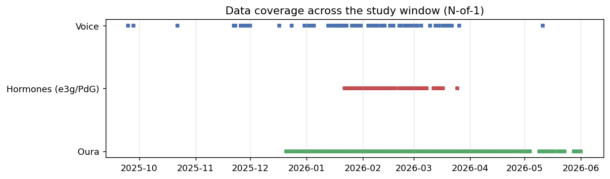

59
voice days across 9 cycles
29
voice + hormone overlap days
2
phase-balanced cycles
Voice
Sustained vowel plus Rainbow Passage / read speech.
Features
openSMILE eGeMAPS whole-recording acoustic measures.
Hormones
Inito E3G and PdG, joined by calendar date.
Controls
Oura temperature, HR, and HRV validate phase labels.

Coverage is strongest in January-March. The main inference is constrained by 2 cycles with recordings in both phases.